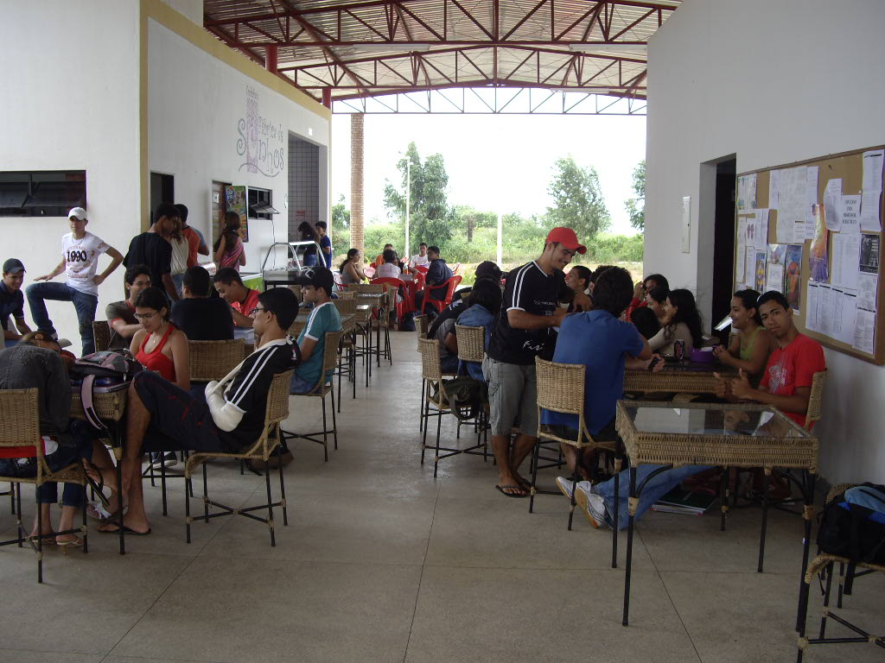

-

-
Lanchonete CIC
0 0 -
Blocos Próximos:
- Educação Física
- Instituto de Computação
-
-

-
Lanchonete do Bira
0 0 -
Blocos Próximos:
- Engenharias
- Arquitetura e Urbanismo
-
-
Objetivo
Site criado como projeto avaliativo para obtenção de nota na disciplina de Internet e WEB. Professor: Fábio Paraguaçu.
-
COMO USAR O SITE?Em cada card você verá o nome e a imagem da lanchonete. Para usuários cadastrados, embaixo do nome, à esquerda, existem dois ícones: um like verde e um dislike vermelho. Clique em um deles para avaliar positivamente ou negativamente a lanchonete. À direita do voto, você poderá ver os blocos próximos a essa lanchonete.
Site feito por:
- Carllos Eduardo
- Jorge Lucas
- Rafael Emílio
- Rick Martin
- Wagner Anthony